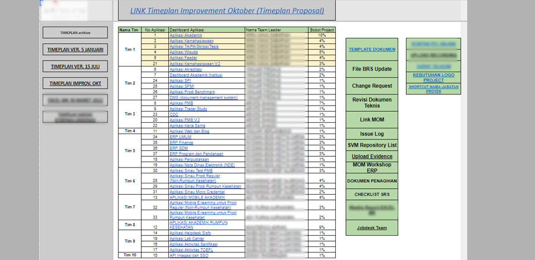
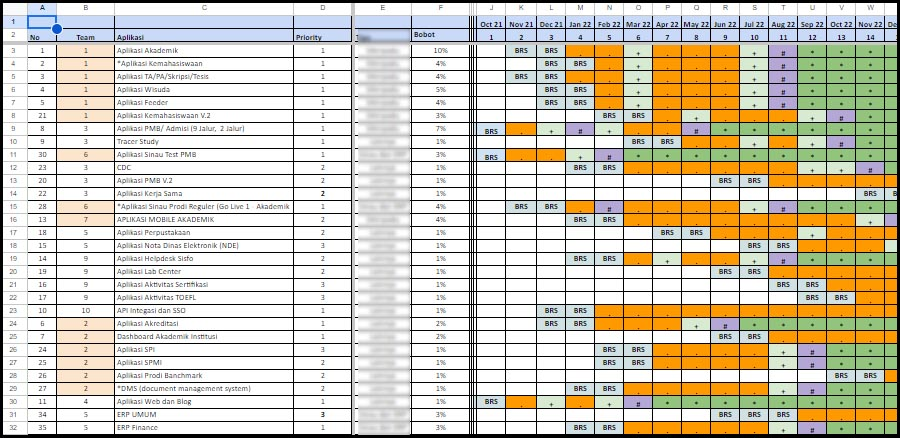
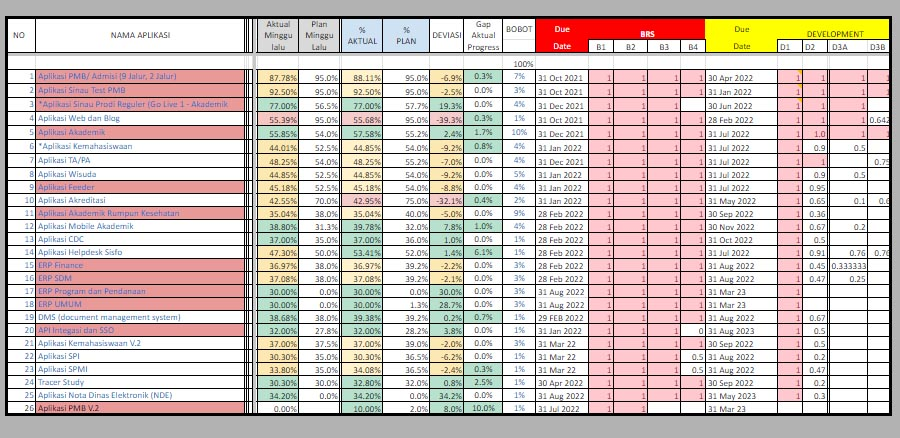
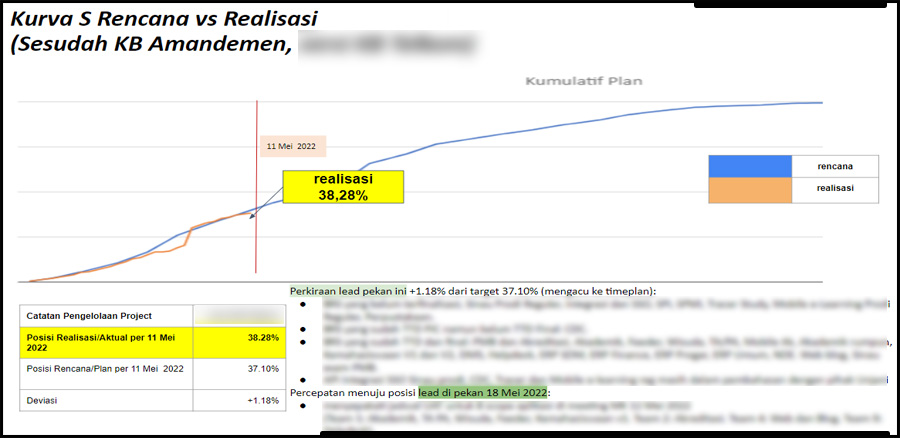
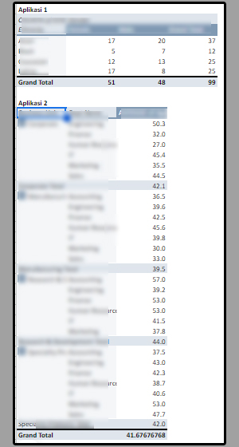

Project Reporting Analytic
Using Microsoft Excel or Google Spreadsheet
Introduction:
Having served as a project support officer and reporting analyst for two years, I have accumulated valuable experiences worth sharing. In this article, I will recount my responsibilities and achievements during this period, predominantly utilizing Excel and Google Sheets. My role primarily entailed facilitating coordination between technical teams and management, alongside providing essential assistance to project managers. Additionally, I was entrusted with the specific task of reporting analysis, which involved tasks ranging from creating time plans and tracking progress to identifying lead and lag indicators and pinpointing areas of slack within projects.
What I built with Excel/Sheet:
1. Developed a comprehensive project dashboard encompassing 37 sub-projects and 10 teams, enhancing visibility, facilitating communication, and optimizing project effectiveness.
2. Constructed high-level time plans, breaking them down into monthly and weekly increments to ensure meticulous project scheduling and management.
3. Compiled project data, evidence, and calculations to accurately track project progress and milestones.
4. Translated project data into visual representations such as S-curves to facilitate comprehension and analysis, while also investigating and reporting on the root causes of project delays.
5. Utilized pivot tables to streamline data analysis and provide insightful perspectives on project progress and performance.
While Excel/spreadsheet software may have limitations compared to specialized analytics software in terms of analytical capabilities, scalability, and handling big data, its advantages lie in its widespread adoption, ease of use, and versatility, making it a powerful and accessible tool for various data management and analysis tasks.